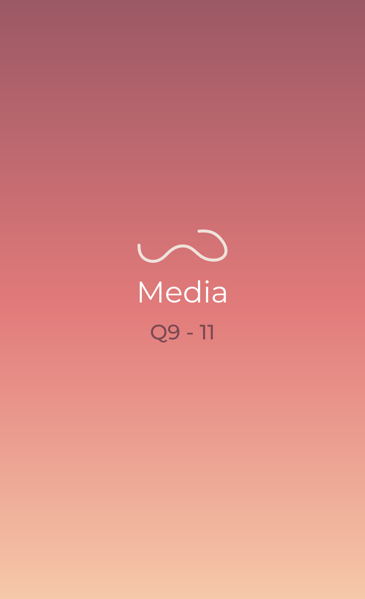

It references music streaming platforms and radio (study, chill, lo-fi kind) as a background noise and image to look at when working, studying,... Also, it references storytelling through the timeline with visual and sound elements.
Since it is a radio and storytelling reference, I realise that I should interact slowly and actually dive into what is being communicated (with no stress or force to complete the experience). I should act like it is a chance for me to relax and escape from what I’m facing (deadlines, worrying thoughts, work,...). Moreover, I should pay attention to the details (not so strictly), just as much as I want (since it’s a personal experience), to understand deeply what the artist wants to communicate to the users.
Since it is a radio and storytelling reference and the website is covered with a chill and relaxing vibe, I should feel the same way. I should also feel curious (before entering the experience) about what will appear next, just like I am so curious, excited about what my life (near and far) will be in the future. In the moment of experiencing, I should feel no pressure and also feel willing to see what’s being told. After the experience, the feeling I should have is satisfied, grateful and impressed.